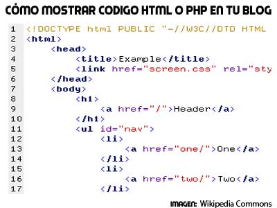

Sintaxis y Selectores CSS, Interacción Humano Ordenador
proposito
Este sitio web es creado con el proposito de dar a conocer a los estudiantes que siginica
Sintaxis y Selectores CSS, Interacción Humano Ordenador, para tener una idea clara y
precisa de este tema.
Sintaxis y selectores CSS
Según Fossati, M. (2018). Introducción a PHP y HTML. Matias Fossati.
La sintaxis de un lenguaje es el "conjunto de reglas que definen las secuencias correctas de los elementos de un lenguaje de programación" (diccionario RAE).
Según Gómez, M. R. (2013). HTML, CSS Y JAVASCRIPT.
Un selector CSS es la primera parte de una regla CSS. Es un patrón de elementos y otros términos que indican al navegador qué elementos HTML se seleccionan para aplicarles una regla que incluye los valores de las propiedades CSS.

Humano y Ordenador
Según i Saltiveri, T. G. (2007). MPIu+ a. Una metodología que integra la Ingeniería del Software, la Interacción Persona-Ordenador y la Accesibilidad en el contexto de equipos de desarrollo multidisciplinares. Universitat de Lleida.
Interacción humano ordenador
La Interacción Humano-Computador (IHC) es el estudio del diálogo entre el hombre y la computadora, la naturaleza de estos dos interlocutores hace de la IHM un campo multidisciplinaria tales como la informática, la ergonomía y la ingeniería de software entre otros.